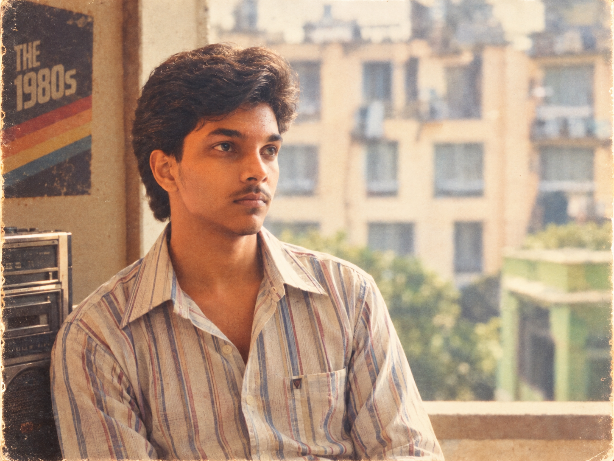

| বিষয় (Category) | বিবরণ (Details) |
|---|---|
| প্রতিষ্ঠান (Institution) | Rajshahi Cantonment Public School & College |
| শ্রেণি (Class) | XI (Science) |
| রোল নং (Roll No.) | 155 |
| শাখা/ফরম (Form) | Bakul (Shift: Day) |
| হাউস (House) | Padma |
| অ্যাকাডেমিক আগ্রহ (Interests) | Science, Technology, ICT |
হ্যালো! আমি মোঃ আবু বক্কর সিদ্দিক। আমি বিজ্ঞান বিভাগের একজন শিক্ষার্থী। পড়াশোনার পাশাপাশি নতুন প্রযুক্তি ও AI টুলস নিয়ে জানতে, গান শুনতে, ফুটবল খেলা দেখতে ভালোবাসি।
| বিষয় (Category) | বিস্তারিত তথ্য (Details) |
|---|---|
| পূর্ণ নাম (Full Name) | MD. ABU BOKKOR SIDDIK |
| জন্মতারিখ (Date of Birth) | ২৬ মার্চ, ২০০৯ (March 26, 2009) |
| পড়াশোনার বিষয় (Subjects) | Physics, Chemistry, Higher Math, Biology, ICT |
| ভালো লাগার কাজ (Hobbies) | ফুটবল ম্যাচ দেখা, গান শোনা, নতুন গ্যাজেট ও AI এক্সপ্লোর করা |
| প্রিয় খেলা (Favorite Sport) | ফুটবল (Football) |

স্মৃতিময় মুহূর্ত - ৩